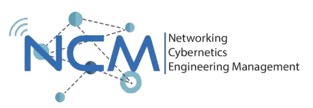
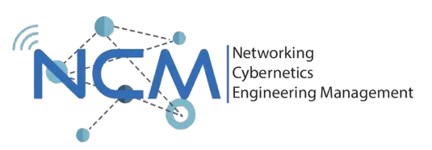

We're More Than Laboratory We're Partners in Your Growth
#GoGoMBC #WeAttack #WeProtect
Jelajahi Layanan KamiTentang MBC Laboratory
MBC Laboratory, singkatan dari Multimedia, Big Data, dan Cyber Security Laboratory, merupakan salah satu entitas penelitian yang beroperasi di bawah Kementerian Komunikasi dan Multimedia (KK NCM). Fokus utama laboratorium ini adalah mempelajari dan mengembangkan pengetahuan di bidang Cyber Security, Big Data, dan Multimedia. Didirikan pada tanggal 4 Oktober 2019, MBC Laboratory telah menjadi pusat penelitian yang berdedikasi untuk memahami, mengatasi, dan mengembangkan solusi terkini dalam tiga bidang utamanya.
Visi
Menjadi Laboratorium unggulan dalam pengembangan teknologi Multimedia Application, Big Data, dan Cybersecurity dengan mendorong eksplorasi dan merancang riset yang memberikan dampak positif dan mengikuti perkembangan teknologi masa kini serta menjadi lingkungan yang membentuk, mematangkan, dan mempersiapkan skill asisten MBC Laboratory agar dapat bersaing di Industri.
Misi
- Menjadi lingkungan yang mendukung pembelajaran dan penelitian jangka panjang.
- Menciptakan lingkungan yang fokus pada pertumbuhan pribadi dan profesional serta mendukung karier.
- Menjadi pusat informasi Teknologi, Multimedia, dan Softskill yang berguna bagi mahasiswa.
Divisi & Layanan Unggulan
MBC Laboratory memiliki empat bidang utama: Cybersecurity, Big Data, Game Technology, dan GIS. Setiap divisi menawarkan layanan spesifik dan solusi inovatif untuk mendukung kebutuhan riset, pengembangan, dan implementasi teknologi di berbagai sektor.
Cybersecurity
Meliputi perlindungan perangkat, jaringan, aplikasi, dan data dari ancaman siber. Layanan meliputi Vulnerability Assessment, Network Security, Digital Forensics, serta edukasi keamanan siber untuk organisasi dan individu.
Potensi Aplikasi: Audit keamanan, pelatihan awareness, investigasi insiden, dan pengembangan kebijakan keamanan TI.
Big Data
Fokus pada pengelolaan, analisis, dan visualisasi data dalam skala besar. Layanan meliputi Business Intelligence, Predictive Analytics, Data Warehousing, serta integrasi data lintas platform.
Potensi Aplikasi: Analisis tren bisnis, pengambilan keputusan berbasis data, dan optimalisasi proses operasional.
Game Technology
Mengembangkan solusi berbasis game untuk edukasi, pelatihan, dan hiburan. Layanan meliputi Corporate Training, Gamified Marketing, VR Experiences, dan pengembangan aplikasi interaktif.
Potensi Aplikasi: Simulasi pelatihan, promosi interaktif, dan pembelajaran berbasis game.
GIS
Menyediakan solusi Geographic Information System untuk pengelolaan dan analisis data spasial. Layanan meliputi Spatial Analysis, Asset Tracking, Site Selection, dan visualisasi peta interaktif.
Potensi Aplikasi: Perencanaan wilayah, monitoring aset, dan analisis lokasi strategis.
Kegiatan MBC Laboratory
Berikut adalah beberapa kegiatan utama yang rutin dilakukan oleh MBC Laboratory untuk mendukung pengembangan keilmuan, riset, dan kolaborasi.
Study Group
Menyelenggarakan pelatihan, workshop, dan seminar di bidang Cyber Security, Big Data, Game Technology, dan GIS untuk mahasiswa dengan nama program "Digilearn".
Riset & Publikasi
Melakukan riset kolaboratif, pengembangan teknologi, serta publikasi ilmiah di jurnal dan konferensi nasional maupun internasional.
Kolaborasi Industri
Bekerja sama dengan mitra industri, pemerintah, dan institusi pendidikan untuk pengembangan solusi dan implementasi teknologi.
Asisten Praktikum
Asisten Praktikum di jurusan S1 Teknik Telekomunikasi berperan penting dalam mendampingi mahasiswa selama kegiatan praktikum. Mereka membantu dosen dalam pelaksanaan praktikum, memberikan bimbingan teknis, serta memastikan pemahaman materi dan penggunaan alat laboratorium berjalan optimal.
Event & Kompetisi
Mengadakan event, lomba, dan kompetisi untuk meningkatkan minat dan bakat mahasiswa di bidang teknologi dan inovasi.
Pengabdian Masyarakat
Melaksanakan program pengabdian masyarakat seperti pelatihan literasi digital, keamanan siber, dan teknologi informasi untuk masyarakat luas.
Hubungi Kami
Punya pertanyaan atau ide proyek? Tim kami siap membantu Anda. Hubungi kami melalui informasi di bawah ini atau kirim pesan melalui formulir kontak.
Alamat
Telkom University, TULT 13.04, TULT 11.12, Jl. Telekomunikasi. 1, Terusan Buahbatu - Bojongsoang, Telkom University, Sukapura, Kec. Dayeuhkolot, Kabupaten Bandung, Jawa Barat 40257
mbclaboratory@telkomuniversity.ac.id
Telepon
+62 21 1234 5678
Kirim Pesan Cepat
Profil Pengembang
Website ini dirancang dan dikembangkan dengan dedikasi untuk memberikan pengalaman pengguna terbaik sebagai wujud transparansi dan akuntabilitas kami.
TONI HANDOKO
Cyber Security Enthusiast
Mahasiswa S1 Teknik Komputer angkatan 2023 di Telkom University dengan minat dan keahlian khusus di bidang jaringan komputer dan keamanan siber. Berpengalaman dalam pengembangan aplikasi web, pengelolaan sistem jaringan, serta implementasi solusi keamanan TI. Memiliki komitmen tinggi terhadap pembelajaran berkelanjutan dan aktif terlibat dalam berbagai proyek serta kegiatan yang mendukung pengembangan profesional di dunia teknologi informasi.